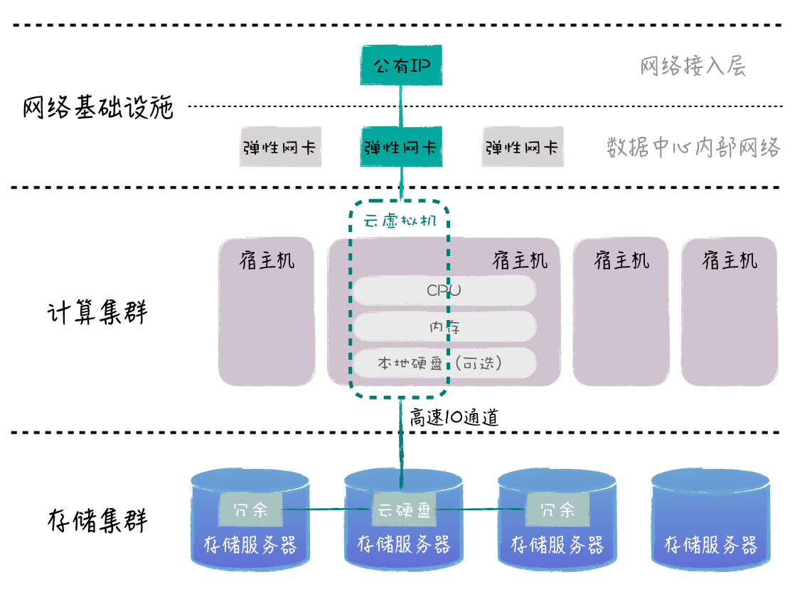
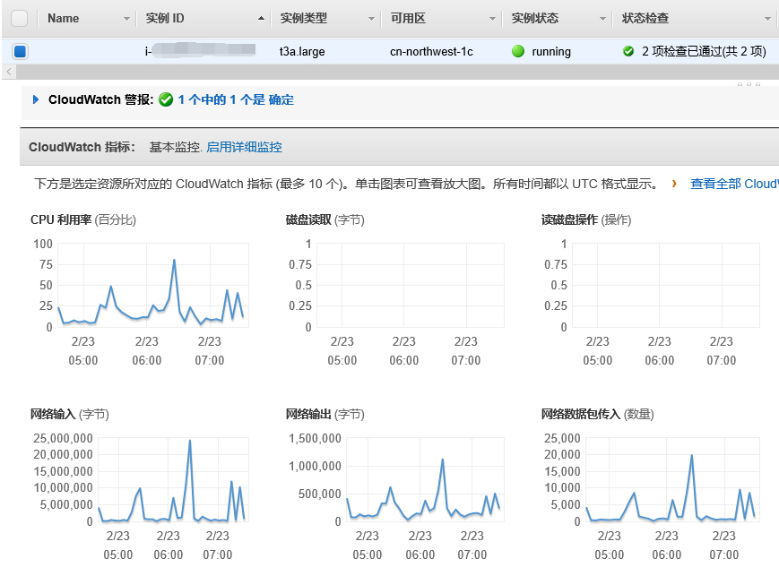
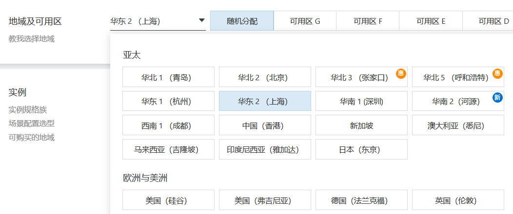
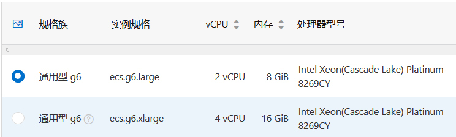
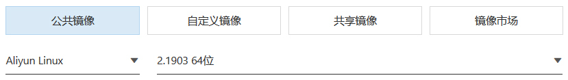
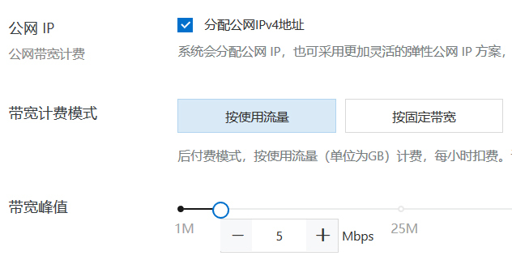
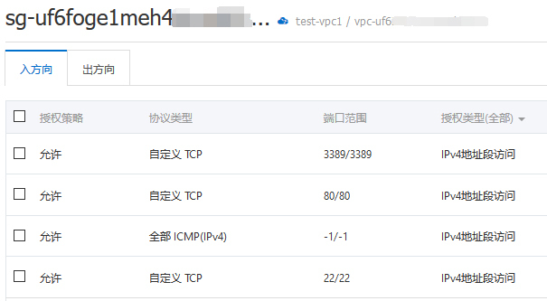
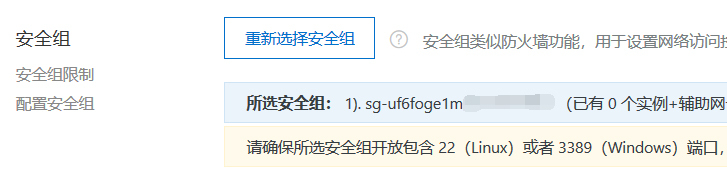
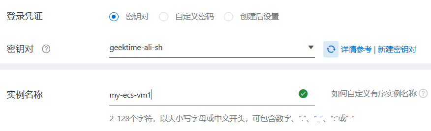

- 00 开篇词 云计算，这是开发者最好的时代.md.html
- 01 区域和可用区：欢迎来到云端数据中心.md.html
- 02 云虚拟机（一）：云端“攒机”，有哪些容易忽视的要点？.md.html
- 03 云虚拟机（二）：眼花缭乱的虚拟机型号，我该如何选择？.md.html
- 04 云虚拟机（三）：老板要求省省省，有哪些妙招？.md.html
- 05 云硬盘：云上IO到底给不给力？.md.html
- 06 云上虚拟网络：开合有度，编织无形之网.md.html
- 07 云端架构最佳实践：与故障同舞，与伸缩共生.md.html
- 08 云上运维：云端究竟需不需要运维？需要怎样的运维？.md.html
- 09 什么是PaaS？怎样深入理解和评估PaaS？.md.html
- 10 对象存储：看似简单的存储服务都有哪些玄机？.md.html
- 11 应用托管服务：Web应用怎样在云上安家？.md.html
- 12 云数据库：高歌猛进的数据库“新贵”.md.html
- 13 云上大数据：云计算遇上大数据，为什么堪称天作之合？.md.html
- 14 云上容器服务：从Docker到Kubernetes，迎接云原生浪潮.md.html
- 15 无服务器计算：追求极致效率的多面手.md.html
- 16 云上AI服务：云AI能从哪些方面帮助构建智能应用？.md.html
- 结束语 与云计算一起，迈向未来.md.html
- 捐赠
02 云虚拟机（一）：云端“攒机”，有哪些容易忽视的要点？
你好，我是何恺铎。
前一讲，我先从数据中心的角度入手，和你讲解了云计算中“区域”和“可用区”的概念，帮助你建立起了大局观。今天，我们就开始进入微观层面，来介绍和讨论IaaS中最重要的核心服务：云虚拟机。
我想，你可能对虚拟机并不陌生，现在虚拟机的应用已经很普遍了。传统的物理服务器上通过安装虚拟化软件，就可以虚拟出多个互相隔离的虚拟机，来帮助我们提高资源的使用效率。云计算中的虚拟机，本质上也是如此，也是底层计算存储能力的抽象和开放。
所以你也许会问，那么云虚拟机到底有什么值得讨论的呢？看上去也就是选取CPU、内存、硬盘几大件，然后启动后登录使用，似乎没有什么新鲜的东西？
没错，云虚拟机粗看起来和传统服务器较为类似。但当你对它的应用逐渐深入、规模不断加大时，就非常有必要去深入了解云虚拟机的特点了，因为你开始需要针对不同的场景进行选型，也要在性能和成本间找到最佳的平衡，让你的应用效益最大化。
因此，我接下来就会用三讲课程，为你详细讲解下云端虚拟机的“门道”。
云虚拟机到底是什么？
云虚拟机，顾名思义，是在云端虚拟出的服务器。这个服务器你可以完全地控制它，从底层操作系统到安装上层应用。
站在技术实现的角度来讲，虚拟化技术是云虚拟机服务的核心，它本身是一个非常宏大的技术领域。比如你可能听说过Xen、KVM、VMWare、HyperV等等虚拟化产品和技术。云计算中所使用的虚拟化技术，也大都是从这些虚拟化实现方式演化而来的。
作为开发者，我们当然不需要成为虚拟化技术专家。我们只需要知道，云端的虚拟化技术在不断进步和发展，使得云端虚拟化的性能损耗在不断减少、资源利用率不断提升就可以了。但你很有必要去了解云计算中虚拟机的体系结构，这也是云虚拟机与传统虚拟机的最大不同。
云虚拟机的体系结构，用一句话来概括一下，就是全面解耦的计算存储分离的设计思想。
小提示：计算存储分离是云计算设计理念中最重要的思想之一，不仅仅体现在虚拟机上，也体现在其他的云服务架构中。我们今后还会不断涉及。
传统的虚拟化，往往是对单一物理机器资源的纵向切割，计算、存储、网络等各方面的能力都是一台物理机的子集。因此，从可伸缩性的角度来说，传统虚拟机存在较大的局限，当物理机的局部出现故障时，也很容易影响到里面的虚拟机。
得益于云端大规模的专属硬件以及高速的内部网络，云虚拟机的组成则有所不同。除了核心的CPU与内存部分仍属于一台宿主机外，它的网络、硬盘等其他部分，则可以超脱于宿主机之外，享受云端其他基础设施的能力。大致架构如下图所示：

你要注意的是，这里我所给出的仅仅是一个简化加工之后的示意图。实际的云计算内部实现，会远比这个要复杂和精妙。不同的云的内部，也会有许多不同的专用硬件各显神通。
所以，云虚拟机，与其说是由一台宿主机虚拟而成的，不如说是云数据中心中的不同部分一起协作，“拼凑”而成的一台机器。这样虚拟出来的机器，我们在使用感受上其实与传统服务器并无不同，但在可扩展性和故障隔离方面，它就具有很大的优势了。
举个例子来说，一台云虚拟机，它可以同时挂载很多硬盘，还能够插上很多“网卡”，拥有多个不同的外部IP。这就是充分解耦带来的好处。
各家厂商的云虚拟机服务的名称会略有不同，阿里云称为云服务器ECS（Elastic Compute Service），AWS称为EC2（Elastic Compute Cloud），Azure就叫Virtual Machine，腾讯云则叫做云服务器CVM（Cloud Virtual Machine）等等。
这里，你需要注意将虚拟机服务和一些建站类服务区分开来，因为它们有时在名称上可能比较类似。比如“云主机”这个叫法，很多云上就是指云虚拟机，在个别云上对应的却是简单建站服务，请你注意不要混淆。
扩展：建站类服务主要是提供一些网站的托管运行环境，如PHP。它是一个相对受限的环境，严格来说属于PaaS服务的范畴，比较注重易用性。而虚拟机呢，则提供了一台真正意义上的服务器，从操作系统到上层应用，都可以自己控制，比起建站类服务来说要开放、通用得多。
虽然各个云厂商对云虚拟机有不同的叫法，但它们的产品形态是比较一致的。当你来到虚拟机服务的门户，一般会有一个列表界面，能够列出当前你拥有的所有虚拟机，你可以按照不同字段过滤、删选、排序。你还可以点击某个VM查看详情，界面一般会展示出VM的常用运行指标。

AWS EC2自带的指标监控
云端“攒机”实战
讲到这里，你已经基本了解云虚拟机的概念了。接下来，让我们进入云虚拟机的实际操作环节。
所有的云上，创建虚拟机时一般都会有相当贴心的向导，你可以在虚拟机门户上点击“创建”，然后按照步骤一步步进行即可。今天，我们就以在阿里云上创建Linux虚拟机为例，帮你把“攒机”时最主要的环节串一串，同时顺便给你介绍一下，那些在“攒机”时容易被忽视但又非常关键的要点。
小提示：在本次实验中，建议你选择“按量付费”的付费模式，这也是云计算的经典付费模式。这种模式是按虚拟机的使用时间付费，比较适合短期实验。当然，更多付费模式都各有特点，后面的第4讲中我们会进行比较和探讨。
第一步，当然是选择和确认虚拟机的所在区域。区域的概念，我在上一讲中已经提到过，它决定了虚拟机的地理位置。

小提示：在部分云中，区域是顶级概念，指定新建虚拟机的区域需要你事先在门户的右上角进行选择和切换，如AWS。
这样，新建的虚拟机就会处于你当前选择的区域。你还可以指定区域内的特定可用区。
随后，就是虚拟机的配置确认环节，也就是我们通常所说的什么型号、几个核、几G内存的选择。配置的选择无疑非常重要，我会在下一讲着重介绍，这里我们先不妨选择默认的2核8G配置。

接着，就有你需要注意的一个要点：选择操作系统镜像。在这里，你可以选择虚拟机所要安装和使用的操作系统，比如常见的CentOS和Ubuntu，同时你也需要选择这个系统具体的版本号。
在操作系统的列表中，你往往会看到厂商的自有操作系统，比如阿里云的Aliyun Linux、AWS的Amazon Linux等。这是一个很有意思的事情。既然已经有诸多流行的Linux发行版了，为什么云厂商还要推出自己的Linux版本呢？我们什么时候才应该考虑使用它们呢？

你可以这样理解：
- 首先，厂商的Linux版本，在理论上会和自己云上的硬件有更好的适配，这样能够更充分地发挥相关硬件的性能。一般来说，厂商也会在自己的云上进行充分的测试和验证。
- 其次，在内核和基础组件的选择上，厂商专有操作系统往往会根据自己的需求判断，来进行一些取舍和裁剪，所以一般会有一个相对苗条的身材，占用比较小的磁盘空间，同时启动速度更快。这是一种更适合云环境的选择，尤其是当你的虚拟机集群规模较大时，就能够显出规模经济效应了。
- 再次，厂商操作系统会预装和云的使用操作方面的一些软件包和SDK，能够为你提供便利。比如说，厂商一般会预装该云的命令行工具（CLI，Command Line Interface），像是AWS CLI等。
- 另外，当然也有云厂商出于“自主可控”方面的考虑，想拥有自己能完全控制的操作系统，不但技术上可以自主演化，还能防范一些商务合作上的风险。厂商自家的PaaS服务，它的底层也一般是使用自己的操作系统。
所以，如果你希望操作系统有更好的软件“兼容性”，或是公司有统一的标准，就可以选择熟悉的老牌Linux系统；而如果你有一些大规模、注重性能的业务，不妨考虑尝试下厂商的Linux操作系统。
接下来，在系统盘方面，我们选择默认给出的40G“高效云盘”即可。云硬盘的故事非常精彩，我们第5讲中会专项讨论，这里你只需要保持这个默认选项就可以了。
点击“下一步”，我们来到网络和安全组的配置页面。在这里，你可以配置私有网络、IP、带宽等重要的网络选项。虚拟私有网络（VPC）同样是一个很大的话题，我们会在第6讲展开学习。
这里我们简单起见，请勾选“分配公网IP地址”的选项。这样创建的虚拟机，会自动被分配一个公开IP地址，便于我们稍后从自己的电脑直接发起连接。

今天我想着重讨论的另一个重点，是接下来选项中的网络安全组（Network Security Group, 简称NSG）。如果这里配置不当，就会直接影响虚拟机的使用。很多新同学由于不太了解这个概念，常常会造成无法远程连接登录的情况。
你可以把网络安全组理解为一层覆盖在虚拟机之外的网络防火墙。它能够控制虚拟机入站、出站的流量，并能根据协议、端口、流向等所设定的规则，来决定是否允许流量通过。
所以某种程度上，网络安全组和操作系统中我们熟知的防火墙（如Linux的iptables和Windows防火墙）一样，都起到网络安全防护的作用。
但你需要注意的是它们的区别：网络安全组并不工作在操作系统层面，而是在操作系统层之外，是额外的一层防护。非法流量在尚未到达OS的网络堆栈之前，就已经被它阻断了。所以NSG的一个优点在于，它不会影响VM的性能。
另外，网络安全组是一种可复用的配置。如果你有大量虚拟机适用于同样的网络控制规则，那么，你就能够很方便地让它们使用同一个网络安全组，这样你管理起来会非常方便。
网络安全组是绝大多数云都支持和实现了重要特性，它体现了云计算中软件定义网络的特点。网络安全组非常灵活，你可以随时更改，规则也会动态生效。
小提示：当你在排查虚拟机的连通性相关问题时，比如假设你的网站或API无法被访问，那你一定要记得检查网络安全组中的设置，查看它相关的端口和协议是否已经开放。

OK，回到我们虚拟机创建的流程，所以我们要创建或使用一个，至少开放了22端口的网络安全组，以便我们能够通过SSH连接上去。阿里云中，就提供了方便的“默认安全组”，我们只需要勾选需要开放的端口，就会帮助我们生成一个安全组实例，并对这台机器启用。你也可以事先手工创建一个安全组，并在此处选择。

再点击下一步，我们就进入了“系统配置”阶段，在这里，你可以为实例命名，指定用于登录的用户名密码或密钥对等，这里比较简单我就不再赘述了。

然后，暂时跳过一些可选的高级设置，确认订单后，按下“创建实例”，就可以等待虚拟机的生成了。一般数十秒至数分钟之内，一台崭新的云服务器就会就绪，进入运行状态。
此时，你可以通过SSH连接上虚拟机的公开IP，使用hostnamectl命令查看一下虚拟机的信息，嗯，一切正常。
client@clientVM:~$ ssh -i ./geektime-ali-sh.pem [email protected]
Welcome to Alibaba Cloud Elastic Compute Service !
[root@my-ecs-vm1 ~]# hostnamectl
Static hostname: my-ecs-vm1
Icon name: computer-vm
Chassis: vm
Machine ID: 201908292149004344218446xxxxxxxx
Boot ID: 2228122a7f3c4b4eb5756824xxxxxxxx
Virtualization: kvm
Operating System: Aliyun Linux 2.1903 (Hunting Beagle)
Kernel: Linux 4.19.57-15.1.al7.x86_64
Architecture: x86-6
成功地登录上去之后，你就可以正常使用这台机器了。比如，通常我们会使用yum或apt等包管理器进行一些应用软件的安装。
到这里，我就带你初步体验完了云虚拟机的创建过程。VM类服务的本质就是租用，我们通过在门户上的简单操作，就能够完成一台定制服务器的“租用”过程。
从原理上说，这和租户从房东那租房子其实没有什么两样。而且云上的租用相当便捷，动动手指你就能轻松完成。唯一不同的是，云厂商一般不会把租客“扫地出门”，只要你按时付费，一般不会出现不允许续租的情况。
课堂总结与思考
在今天这一讲中，我先帮助你了解了云虚拟机的一些理论知识，尤其是一些体系结构方面的特点。然后，我们进入了创建云虚拟机的实操环节，了解了相关的流程和步骤，也讨论了其中所牵涉的一些注意事项。我强烈建议你自己也动手操作一下，完成从创建到连接的全过程，形成一个直观的感受。
我们把这一讲的要点总结如下：
- 云虚拟机是最重要的IaaS服务之一，它基于计算存储分离的架构进行构建；
- 云虚拟机的创建过程，由地域、机型、操作系统、存储、网络等多方面选项共同构成；
- 云虚拟机可使用云厂商自有操作系统，与云有较好的适配；
- 网络安全组是保护云虚拟机的网络防火墙，可以同时应用于多个虚拟机。
在今天我们实践的过程中，也引出了若干重要的概念和选项，如机型配置、云硬盘、云网络等等。后续我们会逐个地展开讨论，敬请期待。
最后，给你留下两个思考题：
- 在上面的实验当中，为了便于连接我们给机器自动分配了公网IP。在生产环境中为了安全性考虑，应该尽可能避免给虚拟机分配公网IP，那么这时你如何连接到这些机器呢？
- 暂时不再使用的云虚拟机，和传统服务器一样可以“关机”。关机状态的云虚拟机仍然会存在于虚拟机列表中，随时可以再启动。那么，关机之后它还会继续收费吗？
欢迎你在留言区和我互动，我会第一时间给你反馈。如果觉得有收获，也欢迎你把这篇文章分享给你的朋友。感谢阅读，我们下期再见。
© 2019 - 2023 Liangliang Lee. Powered by gin and hexo-theme-book.